θ表示未知的角度
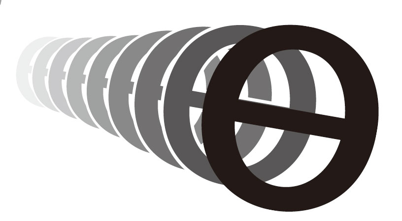
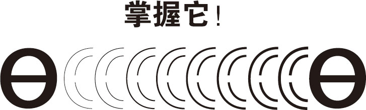
当你不知道角度是多少的时候……
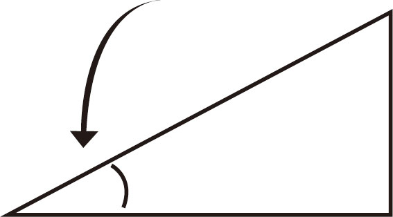
使用符合θ 表示数学问题中的未知角度
π表示数字3.141 5……（它将永远持续下去！）。圆周率π是圆的周长与直径的比值。
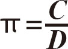
（圆周率＝周长/直径）
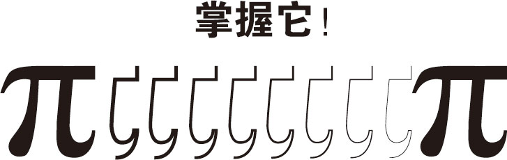
如果你知道一个圆的直径，你可以用圆周率公式计算圆的周长。
2R ＝D
（2倍半径＝直径）
2 R π ＝D π
（2倍半径乘以圆周率＝直径乘以圆周率）
C ＝D π
（周长＝直径乘以圆周率）
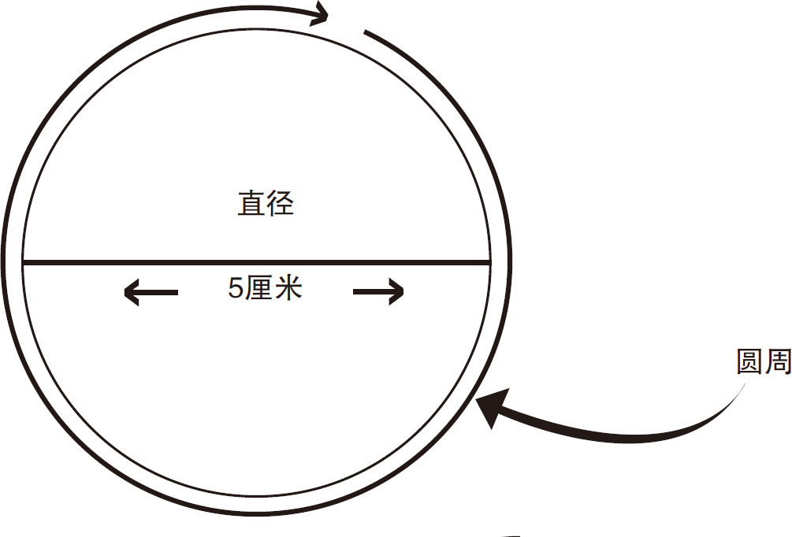
如果知道圆的半径，就可以确定圆的周长
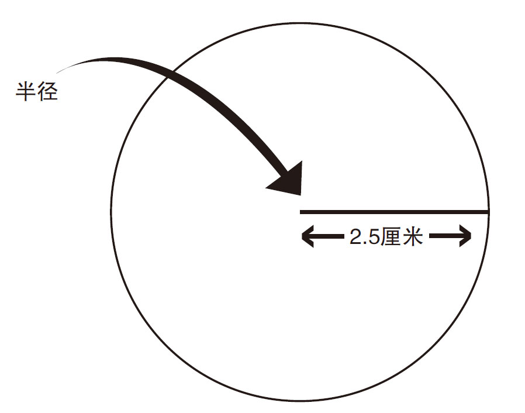
如果知道圆的半径，就可以确定圆的周长。半径是直径的
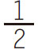
。二倍半径乘以圆周率就是周长
如果知道圆的周长，就可以用圆周率来计算它的直径或半径
■几何可分为：
欧氏几何学，涉及线、圆、三角形等图形；立体几何涉及立方体、棱柱和金字塔等三维物体。
几何学是关于线条、形状、角度、空间以及它们的属性的学科。
■常见多边形的名称和边的数目：
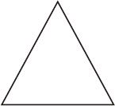
三角形，3条边
四边形，4条边
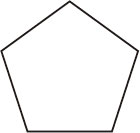
五边形，5条边

六边形，6条边
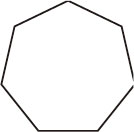
七边形，7条边
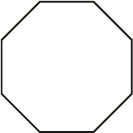
八边形，8条边
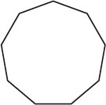
九边形，9条边
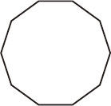
十边形，10条边
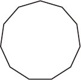
十一边形，11边形
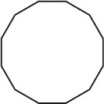
十二边形，12边形
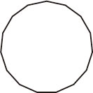
十三边形，13条边

十四边形，14条边
■多边形面积的计算公式：
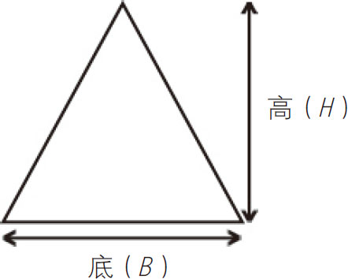
三角形：面积＝
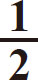
BH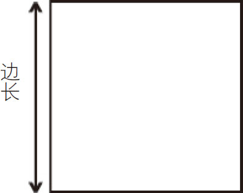
正方形：面积＝边长的平方
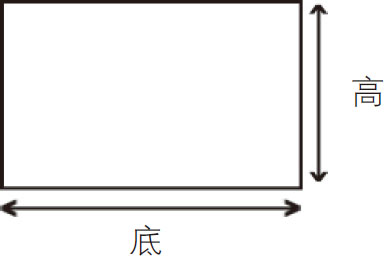
矩形（长方形）：面积＝底×高

平行四边形或菱形：面积＝底×高
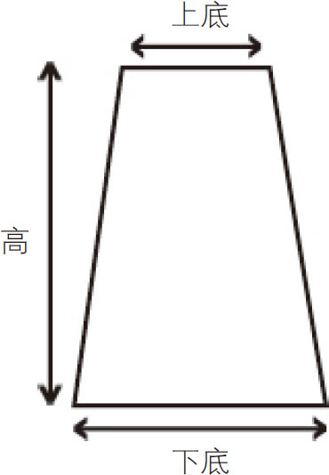
梯形：
面积＝
×高（下底＋上底）
（面积＝［底1＋底2］×垂直高度×
）
■立体几何图形表面积和体积的计算公式：
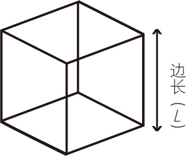
立方体：
表面积＝6L
2
（6×1条边长的平方）
体积＝L
3
（1条边长的立方）
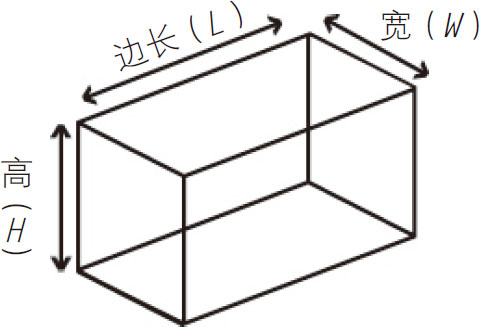
长方体：
表面积＝2（LH＋LW＋HW
）
体积＝长×宽×高
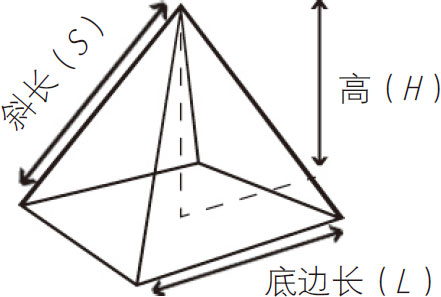
方形金字塔：
表面积＝2HS
＋L
2
体积＝
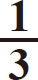
L 2 H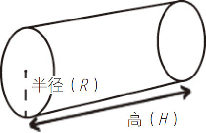
圆柱体：
表面积＝2πR
2
＋2πRH
体积＝πR
2
H

圆锥体
表面积＝πRS
＋πR
2
体积＝
πR
2
H
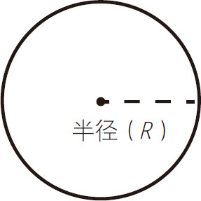
球（体）：
表面积＝4πR
2
体积＝
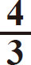
πR 3瑞士数学家莱昂哈德·欧拉发现了扁平无曲线的平边几何图形的共同特征——它们都遵循这一公式：
V –E ＋F ＝2
V ＝顶点数
（这是多边的交汇点）
E ＝边数
F ＝面数
（它是边的表面积）
无论一个多面体的形状是什么样，公式的结果总是2（除了计算机生成的特殊形状），见图3-1。
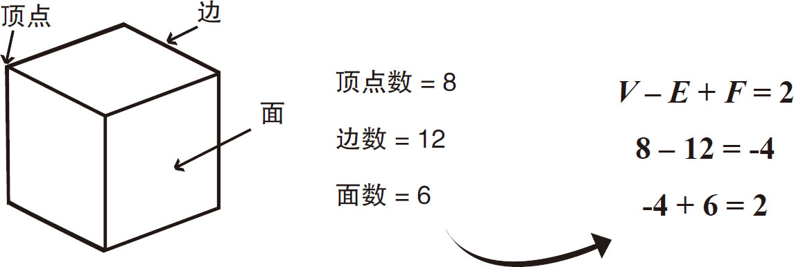
图3-1
图3-2是一个四面体，它有4个顶点、6条边、4个面。计算的结果是：
4–6＋4＝2
图3-3、图3-4、图3-5分别展示了不同形状的多面体，它们都遵循欧拉多面体公式。
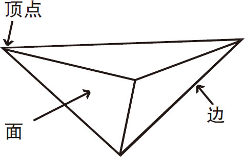
图3-2
V
–E
＋F
＝2
4–6＋4＝2
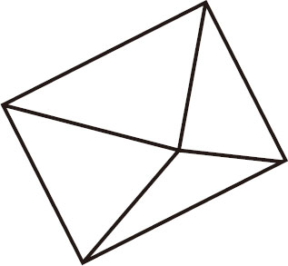
图3-3
V
–E
＋F
＝2
5–8＋5＝2
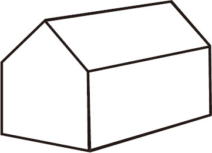
图3-4
V
–E
＋F
＝2
10–15＋7＝2
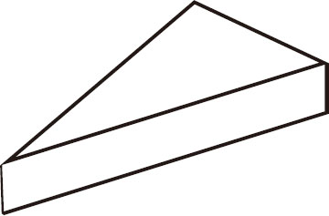
图3-5
V
–E
＋F
＝2
6–9＋5＝2
-3＋5＝2
你可以用一块奶酪来演示欧拉多面体公式。
需要准备的东西：
►奶酪块
►小刀
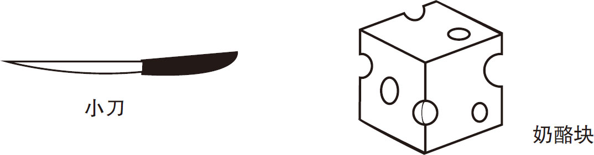
沿着奶酪块对角线的方向切去一端，见图3-6。
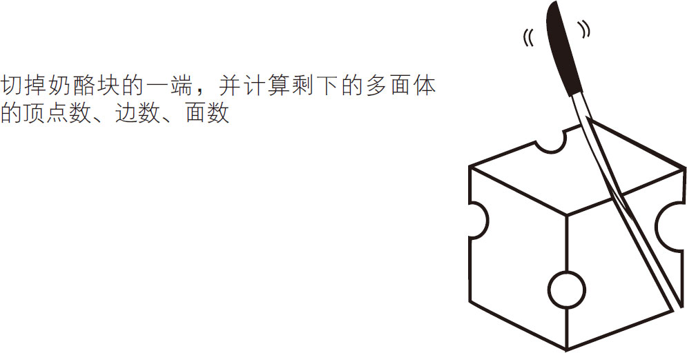
图3-6
计算剩余的顶点、边、面，用欧拉多面体公式写出你的结果。
不断地从奶酪块上沿对角线切下一部分，你会发现每次剩下的多面体都会遵循这个公式，见图3-7、图3-8、图3-9、图3-10。
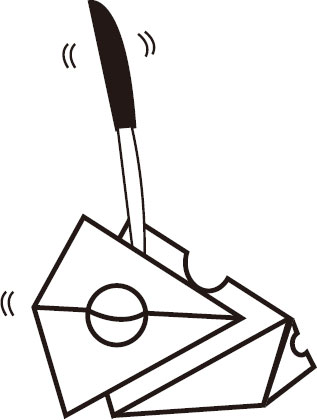 |
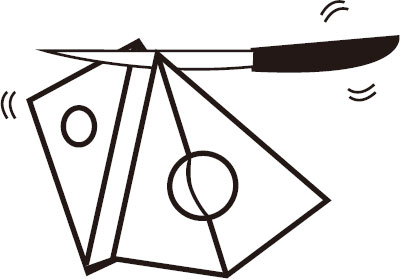 |
| 图3-7 | 图3-8 |
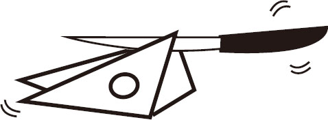 |
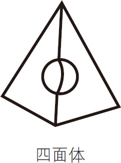 |
| 图3-9 | 图3-10 |
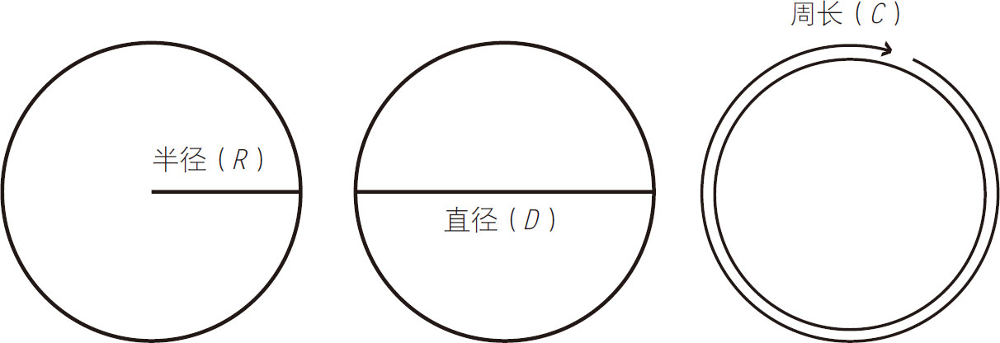
■圆的半径是从中心到边缘的直线距离。直径是以圆的一边为起点，穿过中心，到达圆的另一边的直线。
■周长是圆的边缘的长度。
■当你用周长除以直径时，你会得到3.141 5……这是圆周率的数值。

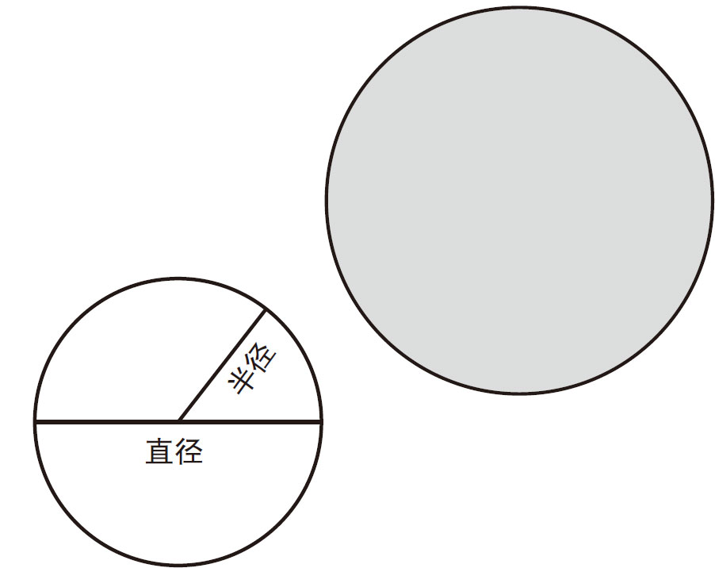
周长的计算公式：
周长＝圆周率×直径
或
C
＝2πR
或
C
＝πD
和朋友们一起制作π杯，这样就能更加了解圆的计算公式了。
需要准备的东西：
►塑料杯
►马克笔
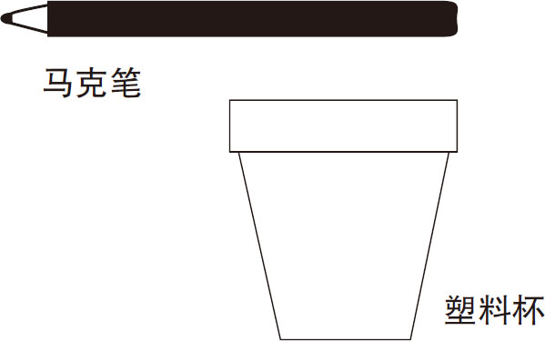
制作
只需在杯子的一侧写上圆周率的符号和数值，如图3-11所示。

图3-11
在杯子的另一侧，写上圆周率的公式，如图3-12所示。
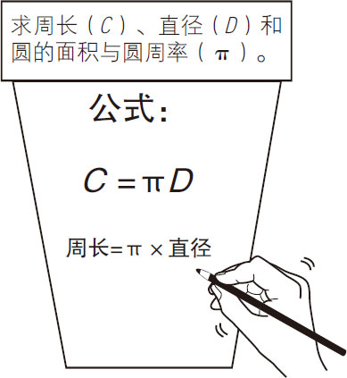
图3-12
在杯子的底部，测量它的直径并写出图3-13所示的信息，学会计算杯子的周长。
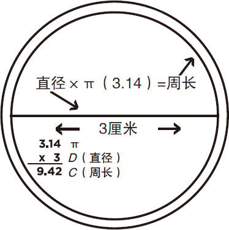
图3-13
π杯的底部
■三角形的三个角的总和是180°。
■三角形的类型：
三角形是最简单的形状，因为它是具有最少的边的图形。
等边三角形
三条边长度相等
三个角相等
（所有角都是60°）
等腰三角形
两条边相等
两个角相等
不等边三角形
不等边（三条边都不相等）
不相等的角（三个角都不相等）
锐角三角形
三个角都小于90°
直角三角形
有一个是直角（90°）
钝角三角形
有一个角角度超过90°
■三角形的面积公式：
面积＝
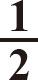
×B ×H（面积是底乘高的一半）
·B 是三角形底的长度。
·H 是三角形的高（垂直测量）。
·三角形的面积是一个具有相同的底和高的平行四边形的面积的一半。
勾股定理是一个基本的几何定理，指直角三角形的斜边的平方（直角相对的边）等于两条直角边的平方和。
这个公式是这样的：A 2 ＋B 2 ＝C 2 ，见图3-14。
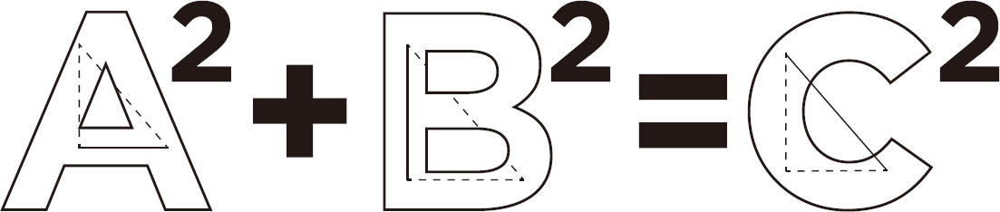
图3-14
图3-15和图3-16显示了“A ”“B ”和“C ”的“平方”的物理版本。
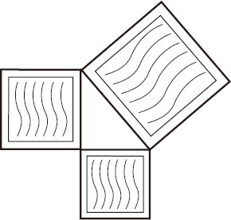
图3-15
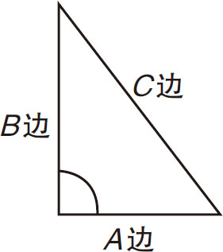
图3-16
在图3-17中显示的三角形，A 边是3厘米，B 边是4厘米。
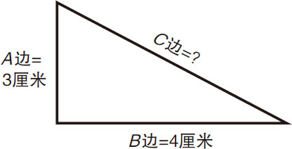
图3-17
A 边的平方是9，B 边的平方是16。两边的总数是25。25的平方根是5。所以，侧边C 的边长是5厘米。
用勾股定理，可以快速计算出路径长度，如图3-18所示。
图3-18
使用普通的纸就可以很容易地证明勾股定理（A 2 ＋B 2 ＝C 2 ），通过动手演示，可以加深你对定理的理解和记忆。
需要准备的东西：
►纸
►剪刀
►钢笔
►直尺
制作
在纸上画一个直角三角形，如图3-19所示。对两个直角边进行测量，并计算它们的平方和，如图3-20所示。
图3-19
勾股定理
（适用于直角三角形）A
2
＋B
2
＝C
2
图3-20
三角形边的平方
已知A
＝4，B
＝3，根据公式A
2
＋B
2
＝C
2
。
可得C
2
＝25厘米，所以C
＝5，用直尺测量C
的长度，看定理是否正确
裁剪并标注与三角形三个边边长相等的三个正方形，如图3-21所示。把它们放在三角形的三条边上，保证三角形的边长和与它对应的正方形的边长相等。
图3-21
注：A边和B边是直角三角形的两条直角边，C边是直角三角形的斜边。
接下来，从A边上剪下两个小长方形，如图3-22所示。

图3-22
例1：边A
＝4厘米
边B
＝3厘米
斜边C
的长度是多少？
A
2
＝3×3＝9
B
2
＝4×4＝16
A
2
＋B
2
＝25
25的平方根是5
C
边＝5厘米，因为
C
2
＝52
＝25
从C 边上拆下一个小正方形，把大块的边A放在三角形的边C 上，见图3-23。
图3-23
将B 边的正方形放置在C边的正方形的旁边，如图3-24所示。
图3-24
最后，把两个小块A切开放在相应的位置来补齐正方形，见图3-25。
图3-25
用回形针和吸管制作一个简单但具有挑战性的装置来学习勾股定理。
需要准备的东西：
►吸管
►回形针
►纸
►透明胶带
►钢笔
►剪刀
►计算器
制作
将三个回形针弯曲成直角和锐角（小于90度角）的形状，如图3-26所示。
图3-26
将回形针折成不同的角度
下一步，把两根吸管剪成两个不同的长度，见图3-27。
图3-27
在图3-28所示的例子中，吸管被标记为12.5厘米和21.5厘米。

图3-28
将回形针推入吸管末端，如图3-29所示。
图3-29
把一根吸管放在固定好的吸管的两端附近，然后剪一个合适的长度。用回形针把它夹在另外两根吸管上，见图3-30。
图3-30
用勾股定理，计算最长吸管的长度（C 侧），如图3-31所示。
现在，您可以使用相同的方法来计算一个矩形的未知边的长度。图3-32显示了如何在门上执行此操作。接下来，我们用已知对角线长度来计算未知边的长度。
图3-32
白天，太阳会产生一个与你的身高和其他物体高度比例相同的影子。
假设，我们要判断一棵树有多高，只需测量你的影子的长度，然后标记并测量一个高大物体相应影子的长度。
图3-33
三角阴影/高度测定
当你的影子长度等于你的身高时，测量一个高物体的影子长度，我们就能知道这个物体的高度了。
如果你不想等到影子长度等于你的身高的时候，你可以用一个简单的比例公式来计算高物体的高度。
例如，如果你的影子长度是1.8米，你的高度实际上是1.6米，测量树的阴影长度，并使用以下公式：
图3-34
这棵树的高度是5.3米。
勾股定理可以让你在知道物体间的距离和三角形的至少一个边的边长和一个角的角度的前提下，算出物体的高度。
你可以用日常物品制作一个测高计，计算较高物体的高度。
需要准备的东西：
►量角器
►垫圈
►金属丝
►透明胶带
►剪刀
►吸管
制作
将金属丝通过垫圈和透明胶带穿到量角器的直边的中间，见图3-35。
图3-35
接下来，剪7厘米长的吸管沿量角器直边右侧粘住，见图3-36。
垫圈能够自由摆动。
图3-36
当你知道一个直角三角形的一条边的长度和一个角的角度时，你就可以计算出未知边的长度。图3-37显示的是一个60度的正切角三角形。使用三角函数或科学计算器算出切线数是1.7 321。男孩的身高是1.7米，他与旗杆的距离也就是三角形的另一边长度是3.4米。使用这些数字可以计算出旗杆的高度。
图3-37
计算如下：
加上人的身高1.7米，
总高度即旗杆高度为7.59米。
注意：每个角度都有自己唯一的切线数，具体图表在本书的参考资料部分。
面向你所需要测量的物体，用你的身高做参考，使用侧高计估算物体的高度。（人的眼睛通常在头顶下方5至8厘米处，记住这一点，估算测高计与地面的距离。）
下一步，来回调整你与物体之间的距离，以获得良好的视野高度。
通过测高计的吸管仰望高大的物体时，注意量角器上的角度，通过这个尺度来计算物体的高度。
■三角原理
■确定未知边的三角公式

（已知相对边与相邻边的长度时）

（已知相对边和斜边的长度时）

（已知相对边和斜边的长度时）
记住下面的字母：
用S O H C A H T O A
记住：
正弦（S） 对边（O）／斜边（H）
余弦（C） 邻边（A）／斜边（H）
正切（T） 对边（O）／邻边（A）